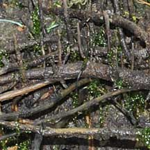
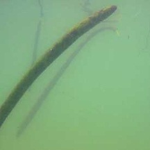
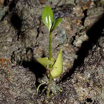
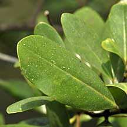
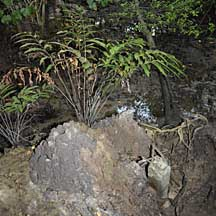
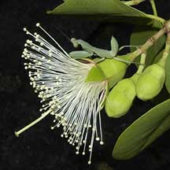

|
|
| mangrove plants text index | photo index |
| Mangroves and mudflats updated Dec 2019 What are mangroves? The word 'mangrove' is used to refer to both the plants as well as the entire community of plants. According to Tomlinson, mangroves may be defined as tropical trees that grow only in the intertidal and adjacent communities. Thus mangrove plants make up a mangrove forest! Kopi Tiam of the sea: Super soft silty mud often form vast flats near mangroves. Lots of burrowing animals live here so mudflats are rich feeding grounds for shorebirds and other larger animals. |
 Shorebirds on Mandai mangroves and mudflats. |
| Root of the matter: Mangrove plants
are able to tolerate being partially submerged in seawater during
high tide, and can grow soft and often oxygen-poor (anaerobic) mud.
They also have to deal with rivers carrying silt during the wet
season, as well as violent storms that hit the coasts. Mangrove roots not only provide support in soft, unstable mud and to withstand currents and storms, but also to breathe. To avoid suffocation in the oxygen-poor mud, mangrove trees have roots that take in oxygen from the air. Called aerial roots, these have on their surface, special tiny pores to take in air (lenticels). Only air can get through the lenticels, not water or salts. All aerial roots also contain large air spaces (aerenchyma). These not only transport air, but also provide a reservoir of air during high tide when the aerial roots may be submerged. Roots for absorbing nutrients are tiny and emerge near the muddy surface. |
 Prop and stilt roots of Rhizophora. Chek Jawa, Oct 09 |
 Buttress roots of Xylocarpus. Pulau Ubin, Jan 09 |
 Cable and pencil roots of Avicennia rumphiana Chek Jawa, Aug 09 |
| Aerial roots can take on different forms. Avicenniahave shallow cable roots that spread out from the trunk. Along
these buried cable roots emerge short pencil-like roots called pneumatophores
(meaning "air carrier" in Greek). According to Hogarth, a 3-metre
tall Avicennia can have 10,000 pneumatophores! Sonneratia also have pneumatophores, but these are cone-shaped. Bruguiera sends out knee roots, that emerge from the ground then loop back
in, often with a knobbly bump at the highest point of the loop that
resembles a knee. Rhizophora has stilt roots arching out from their trunk down to the ground
for extra support and air absorption. They also dangled prop roots
from their branches which, well, prop up the these branches when
the roots eventually grow long enough to reach the mud. . Xylocarpus produces flat, sinuous plank roots that act as buttresses to the
trunk. Most mangrove trees lack a heartwood and instead have narrow vessels that are densely and evenly distributed throughout the wood. Thus, they are better able to withstand damage to the bark and outer trunk. Desalination plants: All mangrove trees exclude most of the salt in seawater at the root level, and all can tolerate more salt in their tissues than 'normal' plants. But some have more effective ultrafiltration at the root level to exclude more salt. Any salt that gets through are believed to be stored in old leaves which are later shed. A few can tolerate high levels of salt in their tissues. They then secrete the excess salt through special cells on their leaves. Avicennia does this best and is often the only tree to survive is hot salty regions. Some other mangrove plants like Sea Holly (Acanthus spp.) also do this. Tough toddlers: If it's hard for adult trees to cope with their environment, it's even harder for tender seedlings which are usually dispersed by seawater. Thus many mangrove trees have special adaptations to give their offspring the best chance in their harsh habitat. Many provide their seedlings with a good store of food and flotation devices to travel to new places. The fruit is the portion that first forms before germination. In some, the fruit does not fall away when it ripens. Instead, the seed within the fruit starts to germinate while it is still on the mother tree, and the mother tree channels nutrients to the growing seedling (vivipary). In some plants, the growing seed does not break through the fruit wall while the seed is on the mother plant but only after the fruit falls off (cryptovivipary). This is the case with Avicennia and the seed coat of its fruits drops away more quickly in water of the right warmth and salinity, usually in a spot best suited for an Avicennia seedling. In others, the growing seedling breaks through the fruit wall to form a long green finger-like stem (called a hypocotyl), sometimes even roots (Rhizophora, Bruguiera). At this point, the 'fruit' is now called the calyx. The entire assembly of hypocotyl and calyx is called the propagule (which means 'potential plant'). When the propagule finally falls, at first it floats horizontally, and drifts with the tide. Some can survive for long periods at sea. The tip is water absorbent while the top end is water repellent. After some time, the tip gradually absorbs water and the seedling floats vertically and starts to sprout its first leaf from the top, and roots from the bottom. When it hits land, it hauls itself upright by growing more roots, then sprouts more leaves. The long stem is a short-cut to sunlight, and oxygen as seedlings are often completely submerged at high tide. Amazingly, young seedlings can survive being completely underwater until they are big enough to grow air-breathing roots, at about 1-2 years. Meanwhile, they depend on stores of air in air spaces (aerenchyma) in their stems. |
 Propagule of Bruguiera gymnorrhiza with red calyx and green hypcotyl. Pasir RIs Park, Aug 09 |
 Mangrove seedlings float root tip down, and leaf bearing tip up, ready to take root when they hit mud. Changi, Feb 11 |
 Avicennia seedling taking root. Tuas, Nov 03 |
| Water water everywhere, not a drop to drink: Freshwater is as precious to a mangrove tree as to a desert plant.
They have to expend energy to get rid of the salt in every drop
of water they use. Thus mangroves have many of the water conserving
features found in desert plants. To minimise water loss through
evaporation they may have thick waxy leaves, hairy leaves (to trap
an insulating layer of air near the leaf and thus reduce water loss
through evaporation). They may also store water in succulent leaves.
Mangroves also protect their hard won water from leaf-eating animals
with spiny or waxy leaves; and high levels of tannins and other
toxins. Mangrove plants are thus a precious resource of novel chemicals
that have myriad potential uses for humans. The Fart of Life: Mangrove mud is usually black and stinky. But this is an indication of life and not necessarily of death and decaying rotten things. Mangrove mud is very fine and well compacted. Thus there is little space for oxygen. But mangrove mud is rich in tiny bits of decaying plants and animals (detritus). Special bacteria thrive on this detritus. These bacteria are special because they can breathe both with and without oxygen. At first, they use up all the oxygen. Then they start to use sulphur, releasing hydrogen sulphide as a by-product. Hydrogen sulphide turns things black and smells of rotten eggs - hence black and stinky mud! These bacteria are in turn eaten by tiny animals which in turn are eaten by larger ones. Thus these bacteria support food chains in the mangroves and beyond. |
 Salt crystals deposited on an Avicennia officinalis leaf. Sungei Buloh Wetland Reserve, Feb 09 |
 Mudlobsters and their mounds add to richness of life in the mangroves Tuas, Nov 03 |
 Sunbird nesting in Sonneratia caseolaris. Pasir Ris Park, Jan 10 |
| Role in the habitat: The mangrove
forest, growing on the border of land and sea, provides food and
shelter for a bewildering variety of land and aquatic animals. Some
animals spend all their lives in the mangroves. Others spend only
part, but often an important part, of their lives here. Thus, destruction
of mangroves may affect animals that are found well beyond the mangrove
forest. Refuge: Tree climbing crabs and sea snails climb up their aerial roots at high tide to avoid aquatic predators. The roots provide a surface for all kinds of creatures to settle on, from algae to shellfish. And the tangle of roots provide hiding places for young fishes and shrimps from larger predators. Their branches provide shelter for creatures from Proboscis Monkeys and nesting sites for large herons, to crevices for insects and other tiny creatures. The mudlobster plays a key role in further enriching the mangrove habitat and allowing a wide variety of plants and animals to thrive in the back mangroves. Food: While on the tree, leaves are eaten by all kinds of creatures. Monkey snack on the shoots and leaves, small insects nibble on them. Fallen leaves are an important source of nutrients both within the mangrove habitat and when it is flushed out to the coral reefs. The leaves are rapidly broken up by crabs and other small creatures, and further broken down by micro-organisms into useful minerals. Bees and other insects visit mangrove flowers that produce nectar. Bats rely on the nectar of the large pom-pom flowers of Sonneratia and it is these bats that also pollinate our durians! There are even tiny moth larvae that feed on pneumatophores. |
|
 The nectar of Sonneratia alba flowers are eaten by bats that pollinate durians! Preying mantis may lurk in wait for insect visitors. Chek Jawa, Jun 03 |


| Human Uses:The mangrove forest
provide many services for humans too. Humans use mangrove trees
and plants for timber, to make
charcoal and for making other things such as baskets, ropes
and other useful items. Parts of mangrove plants are eaten by people
are food and for medicinal purposes, fed to their livestock, and
used to catch fish. But the most valuable service is probably as
a natural filter and in stabilising and protecting coasts (see below). Natural water filter: Underwater, a huge number of filter-feeders fasten onto the tangle of roots: barnacles, sponges, shellfish. These filter feeders clean the water of nutrients and silt. As a result, clear water washes out into the sea, allowing the coral reef ecosystem to flourish. Stabilise the coast and river banks: Their roots prevents mud and sand from being washed away with the tide and river currents. Mangrove trees also slowly regenerate the soil by penetrating and aerating it (other creatures such as crabs and mud lobsters also help in this effort). As the mud builds up and soil conditions improve, other plants can take root. A wall of mangroves trees can also reduce coastal erosion by absorbing the wind and wave energy of violent storms. Sadly, despite the important role of mangroves, they are often looked upon as smelly places which can be put to 'better' use. In Singapore, we have lost a large proportion of our original mangroves to development. We should appreciate and protect our remaining mangroves. |
| These guidesheets
are copyright Dr JWH Yong. |
| Photos of mangroves and mudflats on Singapore shores |
| On wildsingapore
flickr for free download. |
| Mangroves
on Singapore shores text index and photo index of mangroves on this site. |
| Threatened
mangroves of Singapore from Davison, G.W. H. and P. K. L. Ng and Ho Hua Chew, 2008. The Singapore Red Data Book: Threatened plants and animals of Singapore. Updated from Table 2: List and conservation status of the 36 mangrove species in Singapore (as of 2013) YANG Shufen, Rachel L. F. LIM, SHEUE Chiou Rong & Jean W. H . YONG "The current status of mangrove forests in Singapore" (pdf).
|
|
Links
References
|